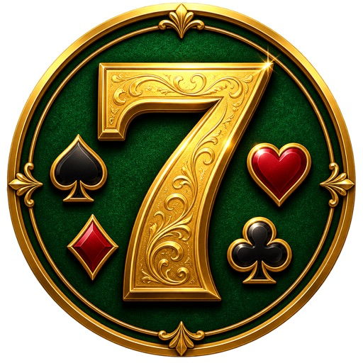

Pis Yedili
Klasik Türk iskambil · botlara karşı veya online masa
Keçe masada Pis Yedili kurallarını oyna: 7 ceza, 8 atlama, 10 yön, Vale renk seçtirir, As tekrar oynatır, isteğe bağlı Joker. Lobiden tek dokunuşla bot maçı veya arkadaşlarınla online masa. Günlük ödüller, görevler, haftalık liderlik ve kozmetik market.
- Hızlı oyun: masa kurmadan 1–3 bota karşı (Kolay / Normal / Zor)
- Online masa ve hızlı eşleş: tek dokunuşla boş masaya otur
- Arkadaş ekle, masana davet et — uygulama kapalıyken bile bildirim
- Kimin çevrimiçi olduğunu yeşil noktayla gör
- Ev kuralları: hızlı mod, As etkisi, Joker cezası
- Günlük giriş ödülü, günlük görevler, başarımlar ve seviyeler
- Haftalık liderlik tablosu: her pazartesi yeni yarış
- Smile'lar, hediyeler ve hazır masa mesajları
- Market: deste, keçe, çerçeve; avatar seçimi